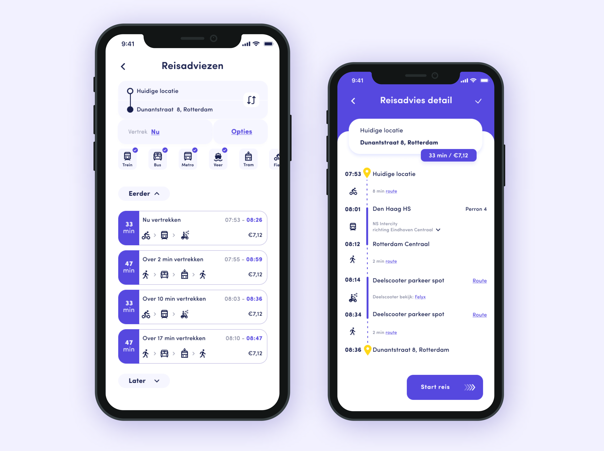
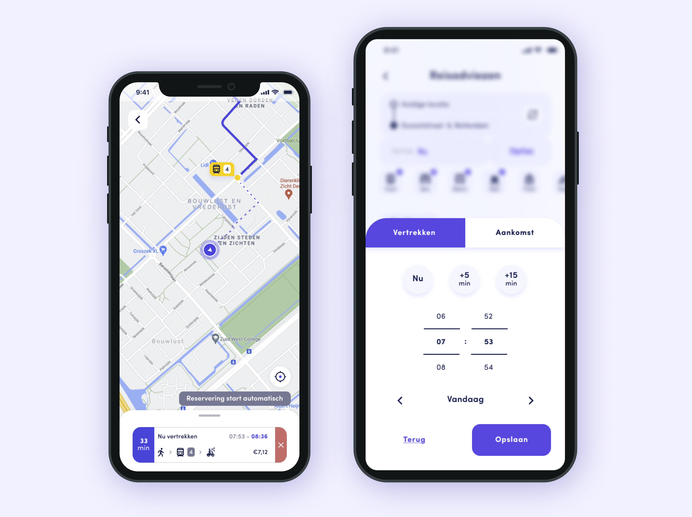
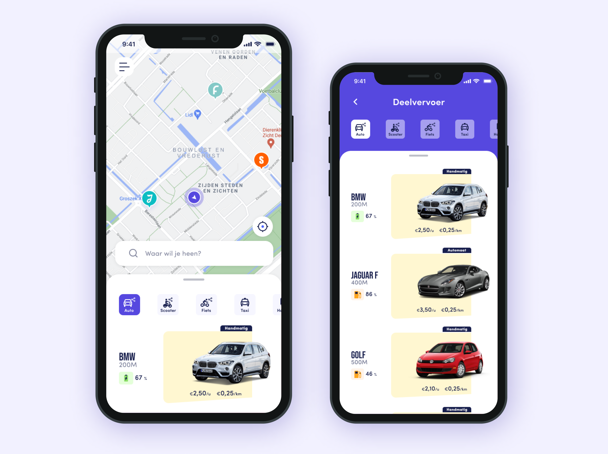
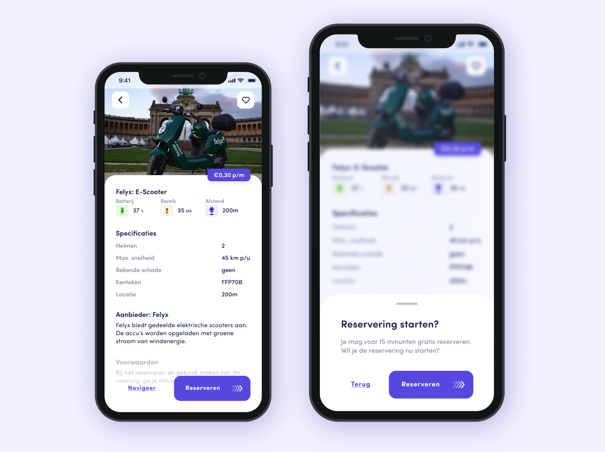

- 
Afstudeer opdracht
Bekijk live versie
Behaald cijfer: 9,5
UX Research
Figma
Prototyping
Usability testing
Video
Clickable demo
Probleemstelling
Reizigers missen een centrale plek om een op maat reisadvies in te plannen en/of boeken waarbij gekozen kan worden uit een palet van (deel-)vervoermiddelen. Het gevolg hiervan is dat de mobiliteit voor de reiziger en de bereikbaarheid van de stad en platteland niet geoptimaliseerd is. Daarnaast kan er maar een beperkte bijdrage geleverd worden aan het verminderen van de dominantie van de eigen auto.
Resultaat
De oplossing is een digitaal platform waar al het mogelijke vervoer gepland, geboekt en betaald kan worden. Bijvoorbeeld de deelfiets, -auto, -scooter, trein, tram, of taxi (alles geïntegreerd in één app zonder doorverwijzingen). Er is een onderzoeksrapport, ontwerprapport, testrapport em hi-fi prototype / clickable demo gemaakt.
Tijdens de uitvoering van de opdracht zijn reizigers en aanbieders actief betrokken geweest. Door zoveel mogelijk ontwerp keuzes te baseren op het onderzoek en vaak te testen met de doelgroep, is het mogelijk geweest om een succesvol en aansluitend prototype te creëren. Uiteindelijk is het cijfer een 9,5 geworden. De examinatoren waren onder de indruk van het werk dat ik heb geleverd. Ze vonden het geweldig doordacht en onderbouwd!
Opgeleverde producten
Onderstaand zijn een paar schermen van het prototype te vinden. Bekijk ze gerust! Of klik er doorheen via het prototype. Mijn afstudeerverslag is online te lezen. Neem gerust een kijkje! Geen zin om alles te lezen? Er is ook een video gemaakt waar het proces kort beschreven wordt en het prototype onderbouwd wordt.
- 
- 
- 